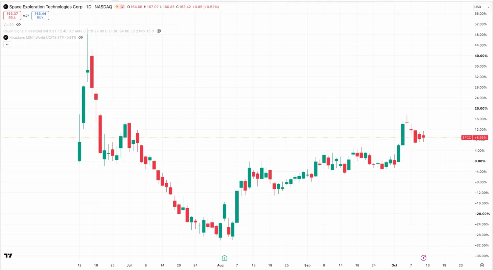
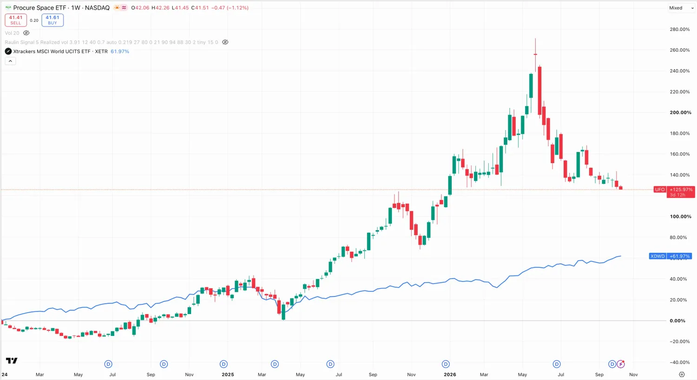

Weltraum
Warum Raketen plötzlich ein KI-Thema sind, wer das überhaupt kann, wie man teilnimmt — und warum die meisten „Weltraum-Aktien" keine sind.
Eine Zahl erklärt alles
Eine Ladung in den Orbit zu bringen kostete 2008 rund 15.600 Dollar pro Kilogramm. Heute liegt der Preis unter 1.000. Das ist ein Rückgang von 95 Prozent in 17 Jahren — erreicht dadurch, dass die erste Raketenstufe zurückkommt und wieder fliegt.
Startkosten in den erdnahen Orbit, Dollar je Kilogramm, in Preisen von 2025. Daten: ARK Invest, Big Ideas 2026, nach Roberts 2022, Sheetz 2022 und Kirtland 2023. Eigene Darstellung. Die 100 $ sind eine Modellrechnung für Starship im Dauerbetrieb, kein erreichter Wert.
Alles, was im Weltraum gerade passiert, folgt aus dieser einen Linie. Wenn Transport um 95 Prozent billiger wird, werden Dinge möglich, die vorher nicht unwirtschaftlich waren, sondern undenkbar.
Das ist keine Theorie mehr
1. Oktober 2026
Google hat einen Testsatelliten mit vier KI-Chips und rund einem Kilowatt Leistung gestartet, mit einer Falcon 9. Projekt Suncatcher. Zwei größere Prototypen sollen Anfang 2027 folgen.
Seit November 2025
Starcloud hat eine Nvidia H100 im Orbit — die erste Grafikkarte aus dem Rechenzentrum im Weltall. Dort lief bereits ein KI-Modell. Der Nachfolger mit Nvidias Blackwell ist für Ende 2026 angekündigt.
Warum Raketen ein KI-Thema geworden sind
Rechenzentren für KI stoßen auf der Erde an drei Grenzen: Strom, Kühlung, Fläche. Im Orbit gibt es Sonne rund um die Uhr und das Vakuum als Kühlung. Was dagegen spricht, ist der Transport — und genau der wird billiger.
Zu heutigen Startkosten
- Rechenleistung im All wäre rund 30 % teurer als auf der Erde
- also kein Geschäft
Zu erwarteten Startkosten
- Rechenleistung im All wäre rund 25 % günstiger
- und damit wird es eines
Der Kipppunkt liegt also beim Preis pro Kilogramm. Und wenn er kippt, wird die Nachfrage nach Starts gewaltig:
Benötigte Masse im Orbit, gemessen an allem, was SpaceX bis 2025 insgesamt transportiert hat. Daten: ARK Invest, Big Ideas 2026. Eigene Darstellung.
Das ist der eigentliche Punkt: Nicht „Weltraum ist spannend", sondern KI braucht Raketen. Damit hängt das Thema am stärksten Trend, den wir gerade haben — und genau deshalb fliegen seit Ende 2025 die ersten Chips oben mit.
Wer das kann
Stand Ende 2025 bis Anfang 2026. Bei den Satellitenzahlen laufen verschiedene Quellen um einige Hundert auseinander, weil täglich welche dazukommen und ausfallen — am 20. September 2026 waren es rund 9.670 aktive Starlink-Satelliten. Die Größenordnung stimmt, auf die letzte Stelle würde ich mich nicht verlassen.
Und seit Juni 2026 kannst du sie kaufen
Lange war das der Haken an diesem Thema: Die mit Abstand beste Firma war nicht börsennotiert. Das hat sich am 12. Juni 2026 geändert — SpaceX ging unter dem Kürzel SPCX an die Nasdaq, Ausgabepreis 135 Dollar, Bewertung rund 1,8 Billionen.
Was seitdem passiert ist, sagt mehr über das Thema als jede Prognose: Hoch bei 225 Dollar am 16. Juni, Tief bei 105 Dollar Anfang August, am 9. Oktober 2026 Schluss bei 163 Dollar. In vier Monaten halbiert und wieder um die Hälfte gestiegen. Das ist keine Aktie für schwache Nerven, und schon gar keine für einen großen Anteil im Depot.

Wie man überhaupt teilnimmt
Beispiele, keine Empfehlungen. Der Reihenfolge nach von „normal" bis „heikel".
1. Über die Nachfrager
Wer Rechenleistung im Orbit braucht, sind dieselben Namen wie auf der Erde — die großen Cloud-Anbieter. Die hast du in einem breiten Welt-ETF ohnehin. Der langweiligste Weg, und der, der am wenigsten schiefgeht.
2. Über börsennotierte Raumfahrt
Rocket Lab ist der bekannteste eigenständige Anbieter neben SpaceX. Daneben Satellitenbetreiber und Datenanbieter wie AST SpaceMobile, Planet Labs oder Iridium. Alle klein, alle schwankend, alle abhängig von einzelnen Aufträgen.
3. Über Weltraum-Fonds
Es gibt sie, aber lies die Positionen. In den meisten stecken zu einem guten Teil Rüstungs- und Luftfahrtkonzerne — die sind an Raumfahrt beteiligt, aber ihr Kurs hängt an Verteidigungshaushalten, nicht an Startkosten.

4. Direkt über SpaceX — und warum ich hier vorsichtig bin
Seit Juni 2026 geht es direkt, Kürzel SPCX. Nur: Bei einer Bewertung um 1,8 Billionen Dollar ist sehr viel Zukunft schon bezahlt. Der Kurs hat sich in vier Monaten halbiert und wieder erholt — das ist die Schwankung, die du aushalten musst.
Dazu kommt: Du kaufst drei Geschäfte in einem. Raketenstarts, Starlink und alles, was daraus noch werden soll. Welcher Teil die Bewertung trägt, wird erst über mehrere Quartalszahlen sichtbar. Ich würde die ersten Berichte abwarten, statt eine Zahl zu kaufen, die noch niemand überprüfen konnte.
Die ehrliche Seite
- Die 25 Prozent günstiger sind eine Modellrechnung. Sie setzen Startkosten voraus, die es noch nicht gibt, und ein Starship, das verlässlich fliegt.
- Ein Rechenzentrum im Orbit ist ungelöst. Wartung, Strahlung, Datenleitung nach unten — nichts davon ist gebaut, alles davon ist gerechnet.
- Der Markt ist klein und lebt von Aufträgen. Ein verschobener Start oder ein verlorener Auftrag bewegt diese Aktien um zweistellige Prozente.
- Die Bewertung von SpaceX ist der größte Einzelposten des Themas. Fast zwei Billionen Dollar für eine Firma, die gerade erst anfängt, öffentlich Zahlen zu liefern. Wer hier kauft, kauft Erwartung.
Wie ich damit umgehe
Ich halte das Thema sehr klein und über die Nachfrager, nicht über die Anbieter. Was ich beobachte, sind die Startkosten pro Kilogramm und wie oft Starship fliegt. Das sind die zwei Zahlen, an denen alles andere hängt.
Beim Börsengang im Juni habe ich bewusst nicht gekauft. Was mich jetzt interessiert, sind die ersten Quartalszahlen: Wie viel vom Umsatz kommt aus Starlink, wie viel aus Starts, und wie viel Geld verbrennt der Rest. Danach kann man über eine Bewertung reden — vorher nicht.